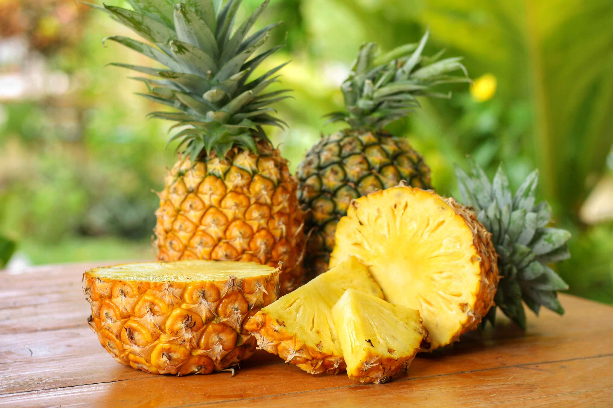
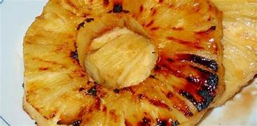

O abacaxi é uma fruta tropical muito apreciada por seu sabor doce e levemente ácido,
além de seu aroma marcante. Originário da América do Sul, é amplamente consumido em diversas partes do mundo,
tanto in natura quanto na forma de sucos, doces e em diversas receitas. Rico em vitaminas, especialmente a vitamina C,
e conhecido por suas propriedades digestivas,o abacaxi não é apenas saboroso, mas também oferece diversos benefícios para a saúde.

origem
O abacaxi (Ananas comosus) surgiu na América do Sul, principalmente nas regiões do Brasil, Paraguai e norte da Argentina.
Ele já era cultivado por povos indígenas, que também ajudaram a espalhar a fruta pelo continente. O nome “abacaxi” vem do tupi e significa “fruta cheirosa”.
A fruta ficou conhecida na Europa após a chegada de Cristóvão Colombo à América, em 1493. Depois disso, foi levada para outras partes do mundo e hoje é cultivada em várias regiões tropicais.
Plantio e época
O abacaxi se desenvolve melhor em regiões tropicais, com clima quente e boa incidência de sol.
Temperatura ideal: entre 22°C e 32°C
Solo: bem drenado e rico em nutrientes
Plantio: feito a partir da coroa (parte de cima da fruta)
Tempo de crescimento: cerca de 12 a 24 meses
A melhor época para plantio costuma ser em períodos mais quentes e com chuvas moderadas.
Floração
A floração do abacaxi acontece após alguns meses de crescimento da planta.
Cada planta produz apenas um fruto por vez. A flor é formada por várias pequenas flores que se unem, dando origem ao abacaxi que conhecemos. Esse processo pode ser estimulado por técnicas agrícolas.
Espécies / tipos
pérola
comum no Brasil
Menos ácido
Casca mais clara
Consumo in natura
Havaí (Smooth Cayenne)
países tropicais
Mais ácido
Polpa amarela intenso
sucos e enlatados
Gold (MD-2)
exportação internacional
Muito doce
polpa amarelo forte
exportação e consumo premium
Imperial
desenvolvido no Brasil
equilibrado
polpa amarelo claro
consumo geral
Composição nutricional
O abacaxi é uma fruta muito nutritiva. Ele contém:
Vitamina C
Vitaminas do complexo B
Fibras
Potássio
Magnésio
Também possui bromelina, uma enzima que ajuda na digestão.
Benefícios do consumo
g
Consumir abacaxi traz vários benefícios:
Ajuda na digestão
Fortalece o sistema imunológico
Auxilia na hidratação
Tem ação anti-inflamatória
Contribui para a saúde da pele
Receitas com abacaxi
🍰 Bolo de abacaxi
Ingredientes
2 xícaras de farinha de trigo
1 xícara de açúcar
3 ovos
1/2 xícara de óleo
1 xícara de abacaxi picado
1 colher de fermento
Modo de preparo
Misture tudo, coloque em uma forma e leve ao forno por cerca de 40 minutos.
🍮Gelatina de abacaxi com creme
Ingredientes
1 caixa de gelatina de abacaxi
1/2 abacaxi picado
1 caixa de creme de leite
Modo de preparo
Prepare a gelatina, misture o abacaxi e o creme de leite, leve à geladeira até firmar.
🍢Abacaxi grelhado

Ingredientes
Fatias de abacaxi
Açúcar e canela a gosto
Modo de preparo
Coloque o abacaxi em uma frigideira ou grelha, polvilhe açúcar e canela e deixe dourar dos dois lados.